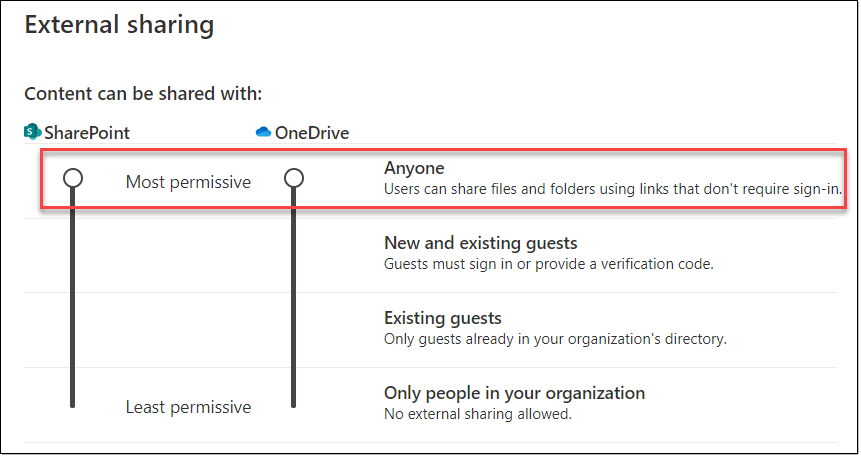
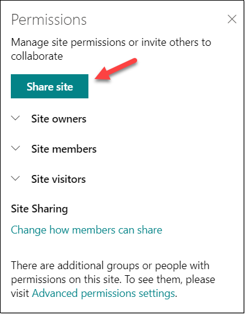
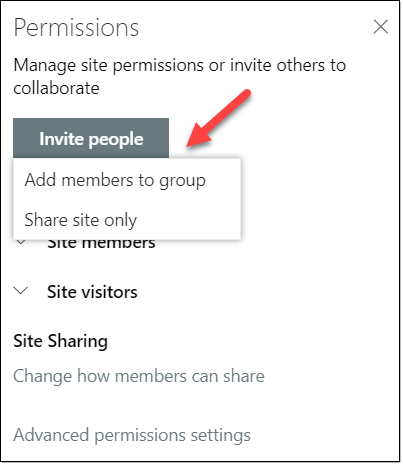
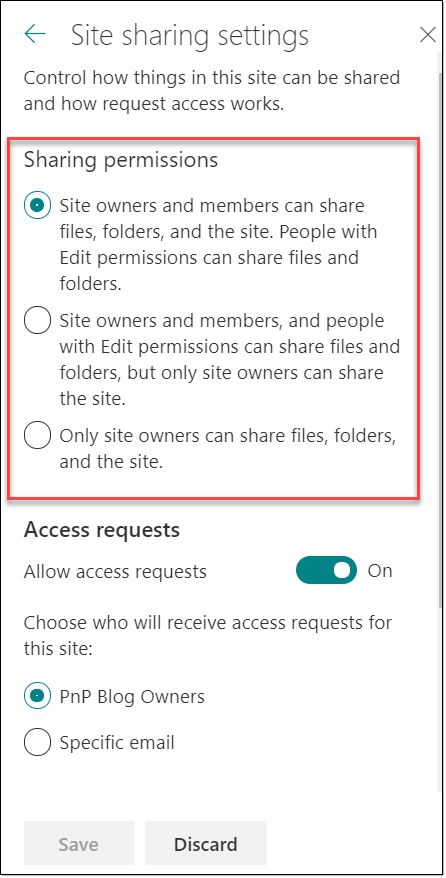
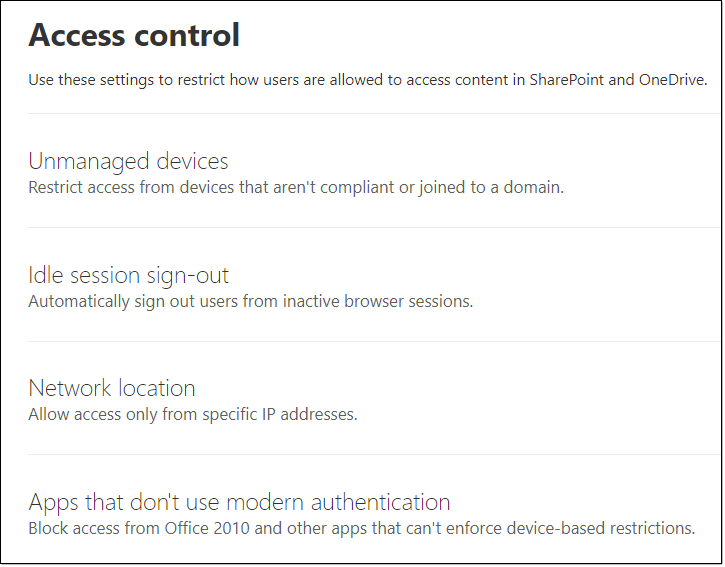

Managing SharePoint Online Security: A Team Effort
Note
This is an open-source article with the community providing support for it. For official Microsoft content, see Microsoft 365 documentation.
Security has always been an important topic, and even more nowadays. We want our users to securely access the environment, share files, and our IT team to sleep at night don't we?
In this article, we'll look at the most important settings in Microsoft 365 to help you secure your SharePoint Online environment, and see how it involves more than SharePoint administrators!
Note
Details on how to configure each settings is out of scope of this article, but links to the official Microsoft documentation will be provided whenever possible.
Tenant settings
This should be the first place to go before even getting the users into SharePoint. But unfortunately, most of the time the default settings remain untouched, and users start using the platform.
There are a few tenant settings to pay attention to however. Sharing settings are extremely important. If left to default, they can have dramatic consequences and lead to data breaches. So let's start with this setting.
Sharing settings
To access the Sharing settings (tenant level), navigate to the SharePoint Admin Center, under Policies, select Sharing.
The first thing that should make your heart beat faster at this stage is the slider for SharePoint and OneDrive being at the same level as the word "Anyone". Isn't it a scary thing to read that users can share files and folders using links that don't require sign-in from the recipient? ANY recipient for that matter.
So unless you're absolutely sure that you want to keep it that way, slide down one level immediately!

Note
You don't even need to know the exact company policy for OneDrive for Business at this point. The slider will also follow the SharePoint setting down one level. That's because you can't have a more permissive sharing policy for OneDrive for Business than you have for SharePoint.
When you know what the company policy is, you can choose the appropriate sharing settings between the following:
- New and existing guests
- Existing guests
- Only people in your organization
More external sharing settings
Again, we have a few options available to help securing a bit more if necessary. You can select them all or not. But it's not because you can that you should!
Limit external sharing by domain: If selected, you can Allow or Block specific domains. A common scenario would be collaborating with specific customers or partners. This setting is available at the tenant level, as well as at the site level.
Note
From the moment you choose to "Allow" one or more domains, the other ones will be blocked. If you decide to "Block" one or more domains, the other ones will be allowed.
Allow only users in specific Security Groups to share externally: If selected, members of the security group(s) will be the only ones capable of sharing externally.
Note
This option is only available if your sharing settings (tenant) are set to "New and Existing Guests" or "Anyone". For more information, please refer to the official Microsoft documentation: Manage Security Groups.
People who use a verification code must reauthenticate after this many days [number of days]: New method where guests will authenticate using a one-time passcode for the number of days you configured.
For more information about this feature, please refer to the official Microsoft documentation: Secure external sharing recipient experience.
Site settings
SharePoint permissions... A vast topic, which most of the time, ends up in hair pulling and sleepless nights. And things are not getting better when sites are group-connected!
See the permissions as crescendo. We start at the top (site level), and going down in a granular fashion, we can assign them to items (documents).
SharePoint Groups
Regardless of the type of site (group-connected or not), when you create a site (although it depends on the template), by default 3x SharePoint groups are created:
- Owners
- Members
- Visitors
Each (built-in) group has a permission level assigned to it. Use those ones first, but if they don't fit your needs, create a new SharePoint group, and assign your own custom permission level to it.
You can copy a permission level, and select or deselect options for your requirements.
Tip
Best Practice. If necessary, create your own SharePoint group and permission level, and avoid modifying or deleting the built-in groups. For more information, please refer to the official Microsoft documentation about the Default SharePoint Groups.
Active Directory (AD) Security Groups
Most organizations already have an on-premises Active Directory, which is synchronized to Microsoft 365. When assigning permissions to a SharePoint site, the recommended approach is to add security groups to those SharePoint groups.
However, it's entirely possible to create Microsoft 365 security groups directly in the admin center, and add those to your SharePoint site as well!
Active Directory groups are different from SharePoint groups. When you create a SharePoint group, it will only be available within the site where it's been created.
Tip
Best Practice. Add security groups to your SharePoint groups for easy management. Although it's possible to add users individually to sites, it will be harder to manage down the line.
Breaking permission inheritance
Sometimes, you might need to share only a library or a document with a user, and not the entire site. That's where we can break permission inheritance. This is more a Site Owner responsibility, rather than for a site member responsibility.
When you create a site and then start creating libraries, lists, and upload documents, all users accessing the site also have access to those libraries and documents. Remember the crescendo thing? 😉
When breaking permission inheritance after creating the library or list, the default SharePoint groups (i.e.: Owners, Members, Visitors) will still appear under the site permissions settings. Add your account (to keep access), then remove the default SharePoint groups, and add whoever needs access to this library, which has now unique permissions.
Note
If you opt to break inheritance after creating the library or list and choose to leave the default permissions in place (i.e.: Owners, Members, Visitors), then changes at the parent level to those permissions will be rolled down to the child object. For example, if you had a user with explicit permissions at the parent level when breaking inheritance, if you choose to leave that person in the list or library, then decide later to remove that person from the parent site, they will also be removed from the list or library with broken inheritance.
Site Sharing
Site sharing will differ if your site is connected to a Microsoft 365 Group or not. The modern interface allows for a more comprehensive way to control permissions, and offers more granularity when sharing.
Sites not connected to Microsoft 365 groups
If your site is not connected to a group, then not much has changed really. Despite the modern interface, SharePoint aficionados will still recognize how to share a site, or be familiar with the Advanced Permissions Settings.

Sites connected to Microsoft 365 groups
When connected to a group, you still have the possibility to share the Site Only. Meaning that you don't have to share other resources associated with a Microsoft 365 group (i.e.: shared mailbox, Planner, etc...).
If however, you wish to share the site as well as including the user(s) within all the resources provisioned with the Microsoft 365 group, then you need to select Invite people >> Add members to group. The choice is yours! 😉

Change how members can share
Something else that might also mitigate how sharing occurs, is the possibility to select between the following 3 options:
Site owners and members can share files, folders, and the site. People with Edit permissions can share files and folders.
Site owners and members, and people with Edit permissions can share files and folders, but only site owners can share the site.
Only site owners can share files, folders, and the site.
With regards to first 2 bullet points, the difference is that in option 2, only the site owner will be able to share the entire site. Members will not. I have to admit, it confused me at first, and I had to read it a few times!
While the 3rd bullet point is self explanatory, we can imagine that it might prevent users from performing their tasks? What if you need to share something with a colleague or a customer? And this will also add more work for the site owner...
This option could be used if your users are new to SharePoint, pending training for them to be more confident in sharing, or simply because you really want to prevent them from sharing.

Access Requests
If you observed the screenshot above, we also had Access Requests turned on by default. What is this?
This feature has been around for a while, and is better that the dreaded "Access denied" message with no possible interaction whatsoever! Although there is more configuration to be done in SharePoint on-premises, everything is ready to go in SharePoint Online! We don't have to worry about anything else than choosing who should receive those requests, add a custom message for the requestor, and review the pending requests.
Two options for who should receive Access Requests:
- Site Owners
- Specific email
To know more about how to configure Access Requests, have a look at the official Microsoft documentation: Set up and manage access requests.
Other Security Features To Consider
Multi-Factor Authentication (MFA)
The first that springs to mind, and not only related to SharePoint, is MFA to secure your identities. A few years back, we were only thinking about applying MFA to (at least) Global Admins, but really we recommend that it be applied on all accounts whenever possible.
Security and Compliance
After securing SharePoint as an environment, we'd also like to secure the data hosted in SharePoint, right?
So we'll hear about Sensitivity labels, Retention labels and policies, Data Loss Prevention (DLP), Sensitive info types... But where are those? Well, they are managed in the Security and Compliance Center.
Should I manage and create those as a SharePoint Administrator? Probably not. This will require someone with permissions to the Security and Compliance center, as well as the knowledge to create labels and policies.
Ideally, this should be directed by company requirements, thoughtfully planned, and carefully implemented.
Note
Depending on your current Microsoft 365 licensing subscription(s), and the way features evolve quickly, please refer to the official Microsoft documentation: Microsoft 365 compliance_.
Devices Accessing SharePoint Data
More options are available within the SharePoint Online Admin Center, but may rely on an Azure subscription.

The following documentation is very interesting to help understand how Microsoft is protecting the SharePoint and OneDrive for Business data, as well as providing other links for your reference: How SharePoint and OneDrive safeguard your data in the cloud.
Conclusion
As we've seen throughout this article, SharePoint security is not only a matter of having SharePoint admin permissions. It definitely is a team effort where so many other roles are involved!
Principal author: Veronique Lengelle, MVP